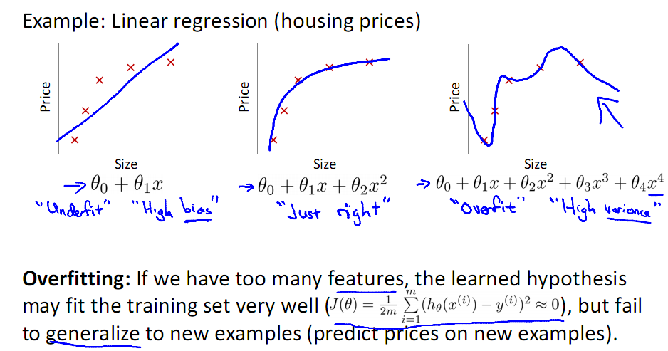
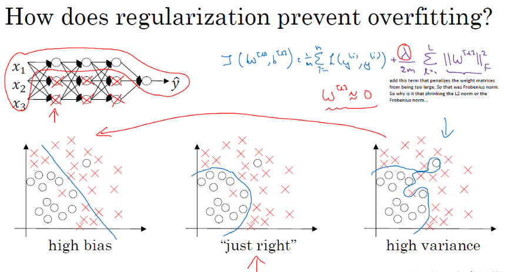

Learning with intuition.
每一个概念，被定义就是为了去解决一个实际问题（问Why&What），接着寻找解决问题的方法（问How），这个“方法”在计算机领域被称为“算法”（非常多的人在研究）。
我们无法真正衡量到底是提出问题重要，还是解决问题重要，但我们可以从不同的解决问题的角度来思考问题。
一方面，重复以加深印象。另一方面，具有多角度的视野，能让我们获得更多的灵感，真正做到链接并健壮自己的知识图谱。
正则化用来改善过拟合
过拟合
首先了解什么是过拟合。
一般机器学习的目的为了获得泛化误差小的学习器，进而预测新样本。 实现这个目的的路径是尽可能的最小化经验误差，即从训练样本中尽可能学出适用于所有潜在样本的“普遍规律”，这样在遇到新样本时就可以依据这个”普遍规律”作出正确的判断。 当样本量足够大时，经验误差最小化能保证有很好的学习效果。 在现实中被广泛采用。 但是，当样本容量很小时，经验误差最小化学习的效果未必很好。 学习器过度追求最小化经验误差，把训练样本学得“太好了”，就很可能把训练样本自身的一些特点当作所有潜在样本都会具有的一般性质，即学到的并不是真正的“普遍规律”。这样会导致泛化性能下降。 这就是“过拟合”。

直觉考虑为什么会过拟合
一般机器学习方法，都依据损失函数L(y_i, h_{\theta}(x^{i}))(代价函数)最小的方法寻找最优的模型。 假如我们使用平方损失函数，则需要求解以下最优化问题：
这里，可以令$h_{\theta}(x^{i}) = w_0x_0 + w_1x_1 + \cdots + w_nx_n$
为什么$f(x)$可以用多项式模拟？ 泰勒展开式，任何函数都可以用多项式的方式去趋近。
比如下图，会发现，过拟合的情况可能使用了过多的特征。 因此，首先想到的一个方法就是控制n的量，即让n最小化。

再考虑什么是过拟合
过拟合的本质是模型参数矩阵W是一个病态矩阵, 即矩阵W的特征值很大，在特征方向上自由度大, 输入的任何微小改变，都会引起输出的较大改变。 这样的模型参数是不稳定的，因为你不能保证输入数据都是无噪声的，如果你的模型因为噪声而输出千差万别，那这个模型有什么用呢？
所以正则是什么，正则是限制在输入训练数据之后，防止解参数W剧烈震动，如果剧烈变化很大，那么你最后SGD的模型就是个病态模型。怎么防止震动，就是SRM思想，去控制压制参数，不让其自由发展。
过拟合解决方法： 让n最小化
那现在的目标就是让R_{emp}和||w||_{0} 都最小化。 所以可一求解让两者的和都最小化。
如果||w||_{0}很小，但R_{emp}很大，会如下图左一，出现线性拟合高偏差欠拟合的状态，没有意义。 如果||w||_{0}过大，R_{emp}再小也没有用，则会出现过于灵活的非线性拟合高方差过拟合的状态。 正则化项的存在使得权重矩阵不会取值过大，就不会出现过拟合高方差。 它相当于尽量把第一张图右一的所代表的状态尽量往第一张图左一代表的状态那边拉，从而得到图中间”just right”的状态。 这就是为什么||w||_{0}能够防止过拟合。

下面给出更专业的名称，R_{emp} 经验风险，||w||_{0}正则化项，表示模型的复杂度。 R_{emp} + ||w||_{0} 结构风险。 结构风险最小化等价于正则化。 通过风险结构最小化或正则化，可以使得模型对训练以及未来的数据都有较好的预测。 即之前的最优解问题转变为最优化以下问题
L0范数到L1范数
不难发现，正则项为L0范数。
范数
各位计算机界的叔叔、阿姨、伯伯、婶婶，经过不懈的努力，发现0范数比较恶心，很难求，求解的难度是个NP完全问题。 然后很多脑袋瓜子聪明的叔叔、阿姨、伯伯、婶婶就想啊，0范数难求，咱们就求1范数呗，然后就研究出以下结论：一定条件下，可以转换为求1范数的最小值。 因此，关于0和1范数总结为：1范数和0范数可以实现稀疏，1因具有比L0更好的优化求解特性而被广泛应用。
L1范数和L2范数
L2范数是指向量各元素的平方和然后求平方根。我们让L2范数的正则项$||w||_2$最小，可以使得W的每个元素都很小，都接近于0，但与L1范数不同，它不会让它等于0，而是接近于0，这里是有很大的区别的哦；所以大家比起1范数，更钟爱2范数。
二次正则项的优势，处处可导，方便计算，限制模型的复杂度。 在多项式模型中，直观理解是每一个不同幂次的x前的系数，0（或很小的值）越多，模型越简单。这就从数学角度解释了，为什么正则化（规则化）可以限制模型的复杂度，进而避免过拟合
一次正则项的优势，$||w||_1$取到最小值的位置，是$||w||_1 = 0$的位置。 意味着从另一种角度来说，使用一次正则项可以降低维度（降低模型复杂度，防止过拟合）二次正则项也做到了这一点，但是一次正则项做的更加彻底,更稀疏。不幸的是，一次正则项有拐点，不是处处可微，给计算带来了难度，很多厉害的论文都是巧妙的使用了一次正则项写出来的，效果十分强大。
正则化的一般形式
其中，$\lambda \geqslant 0$ 是系数，用于权衡经验风险和模型的复杂度。
更一般的，可以写成以下形式
其中，$J(h) = \sum_{j=1}^{n}|w_j|^{p}$
其他概述
作者：呃呃
链接：https://www.zhihu.com/question/20924039/answer/16625563
来源：知乎
正则化就是对最小化经验误差函数上加约束，这样的约束可以解释为先验知识(正则化参数等价于对参数引入先验分布)。
约束有引导作用，在优化误差函数的时候倾向于选择满足约束的梯度减少的方向，使最终的解倾向于符合先验知识(如一般的l-norm先验，表示原问题更可能是比较简单的，这样的优化倾向于产生参数值量级小的解，一般对应于稀疏参数的平滑解)。
同时正则化，解决了逆问题的不适定性。 产生的解是存在，唯一同时也依赖于数据的，噪声对不适定的影响就弱，解就不会过拟合，而且如果先验(正则化)合适，则解就倾向于是符合真解(更不会过拟合了)，即使训练集中彼此间不相关的样本数很少。
作者：Miruku Zhang
链接：https://www.zhihu.com/question/20924039/answer/584403078
来源：知乎
缩小参数空间，防止过拟合
由于模型选择的问题，比如一个应该2次回归的问题用了3次方程来fit，这个时候参数对数据的噪声过于敏感。 所以不想要在这么大的搜索空间进行搜索，想要把搜索空间约束到更适合该问题的地方，于是加了一个regularizer来约束。 如果这个regularizer加的合适，那么在新的约束下的搜索空间进行搜索，便有可能得到更好的解。
加先验知识
使得求解变得可行（比如样本较少时候OLS的逆矩阵求解）
其他改善过拟合的方法
数据增强
减缓过拟合的最简单方法就是增加训练集的数量。在机器学习中，我们有时无法增加训练数据的数量，因为寻找标签数据成本很高。 假如我们现在需要处理一些图像，可以通过尝试一些做法来扩充数据集——旋转图像、剪切、缩放、变换等等。 这种方法就是我们所说的数据增强，借助它我们通常能大幅提高模型的准确度，同时也是优化模型预测的常用技巧。
提前停止（Early Stopping）
“提前停止”（Early Stopping）是一种交叉验证策略，我们把训练集的一部分用作验证集。当我们看到模型的性能在验证集上开始糟糕时，我们就立马停止训练模型，这就是Early Stopping。